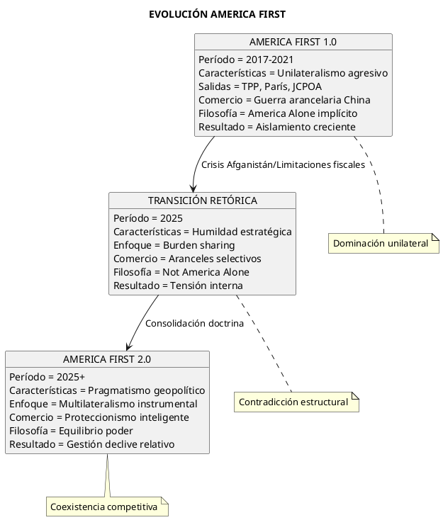
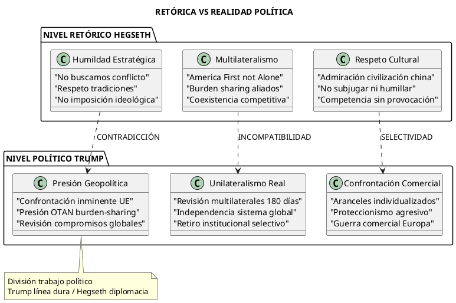
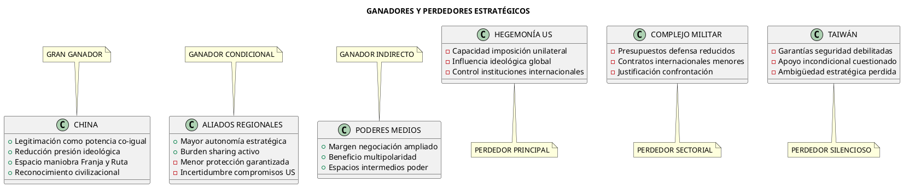
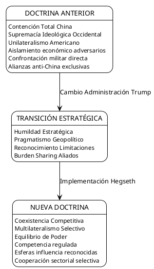
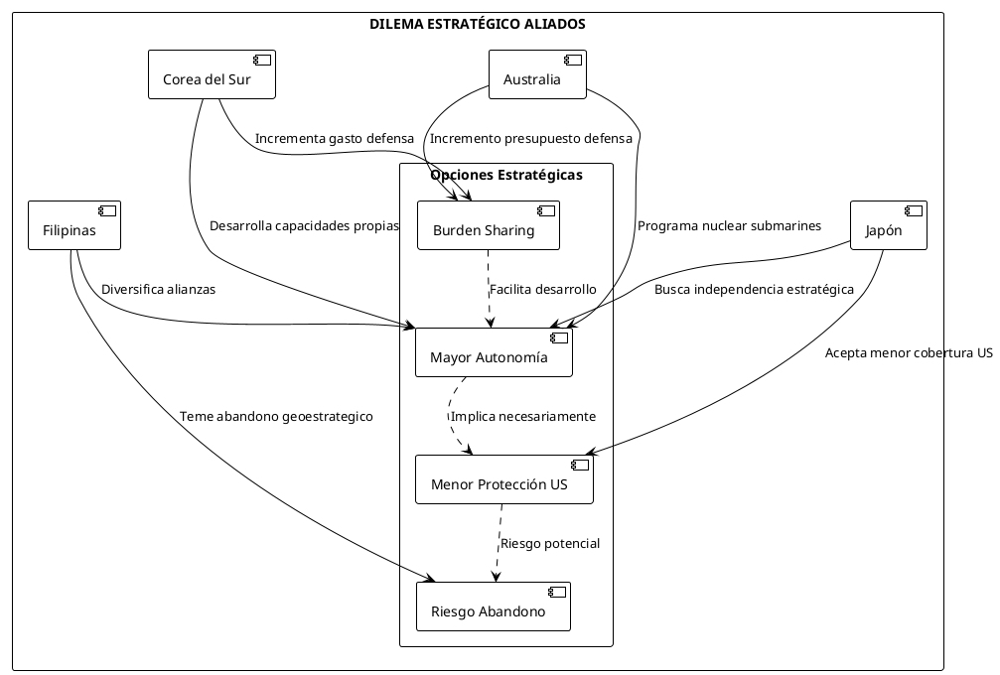
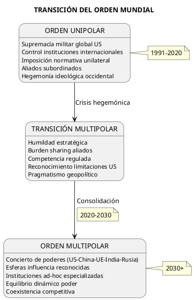

La "Humildad Estratégica" de Hegseth: Análisis Crítico de la Nueva
Introducción: El Punto de Inflexión Estratégico
El discurso de Pete Hegseth en el Diálogo de Shangri-La 2025 representa más que una declaración de política exterior; constituye una redefinición fundamental del posicionamiento geoestrategico estadounidense en la era Trump 2.0. Este análisis examina las implicaciones, contradicciones y realidades detrás de lo que el autor Chad Williamson denomina "humildad estratégica".
Marco Contextual: El Indo-Pacífico como Teatro Prioritario
La Realidad Geoeconómica
El Indo-Pacífico concentra el 60% del PIB mundial y el 65% del comercio marítimo global. La declaración de Hegseth de que esta región es el "teatro prioritario" no es retórica diplomática, sino reconocimiento de una realidad económica ineludible.
El Dilema de Tucídides Contemporáneo
La relación Estados Unidos-China encarna el clásico dilema de Tucídides: ¿puede una potencia emergente (China) desafiar a una establecida (EE.UU.) sin generar conflicto? El discurso de Hegseth intenta navegar esta tensión mediante lo que denomina "disuasión sin deshumanización".
Análisis Crítico: ¿Evolución o Contradicción del "America First"?
La Paradoja Fundamental: "America First, But Not Alone"
El discurso de Hegseth presenta una tensión conceptual fundamental que requiere análisis profundo. La declaración "America First certainly does not mean America alone" representa una evolución significativa - o una contradicción interna - del slogan original trumpista.
Trump 1.0 vs Trump 2.0: Análisis Comparativo
Trump Primera Administración (2017-2021):
- Enfoque en "reducing U.S. trade deficits and rebalancing burden sharing within alliances"
- Retiro de acuerdos multilaterales (TPP, Acuerdo de París, JCPOA)
- Confrontación comercial directa con China
- Emphasis on protectionism have triggered retaliatory measures
Trump Segunda Administración (2025):
- Comprehensive review within 180 days of all current multilateral organizations
- Return to "America First" foreign policies in Washington
- Pero con matices de "humildad estratégica" via Hegseth
La Modificación Retórica: De la Dominación a la Coexistencia

Análisis de Autenticidad: ¿Cambio Real o Táctica Electoral?
Evidencias de Cambio Sustantivo
- Limitaciones Estructurales: President Trump will impose an individualized reciprocal higher tariff - Enfoque más selectivo que aranceles generales
- Presión de Aliados: "I do think he's had an impact, and in the right direction. There should be better burden-sharing," said John Bolton
- Realidad Fiscal: Déficit presupuestario hace insostenible unilateralismo total
Evidencias de Continuidad
- Revisión Multilateral: Comprehensive review within 180 days of all current multilateral organizations
- Críticas Externas: Trump administration has wrought chaos around the world and weakened the United States' place in it
- Confrontación Europa: Trump's remarks at Davos on January 23, 2025, and in other brief comments to the press made clear that a confrontation is coming, especially with the European Union
La Gran Contradicción: Retórica vs. Política Concreta
Nivel Retórico (Hegseth)
- "Respeto por tradiciones y militares"
- "No imposición ideológica"
- "America First, pero no sola"
Nivel Político Concreto (Trump)
- Withdrawal from multilateral agreements, imposition of tariffs, and emphasis on protectionism
- President has declared independence from the global system that America made
- Confrontación inminente con UE

Evaluación Final: ¿Evolución o Cosmética?
Hipótesis 1: Evolución Estratégica Real (Probabilidad: 25%)
- Aprendizaje de limitaciones primera administración
- Adaptación a realidades geoeconómicas
- Influencia asesores pragmáticos (Hegseth)
Hipótesis 2: División Trabajo Político (Probabilidad: 50%)
- Trump mantiene línea dura electoral
- Hegseth suaviza retórica internacional
- Táctica "policía bueno/policía malo"
Hipótesis 3: Contradicción Irreconciliable (Probabilidad: 25%)
- Tensión interna administración
- Falta coherencia estratégica
- Política reactiva vs. proactiva
La declaración "America First, but not Alone" representa menos una evolución conceptual que una necesidad táctica de reconciliar el nacionalismo populista doméstico con las realidades geopolíticas que requieren cooperación internacional. El discurso de Hegseth intenta cuadrar el círculo de esta contradicción fundamental, pero la evidencia política concreta sugiere que la esencia del "America First" - zero-sum competition for power and resources - permanece intacta.
Verdades Subyacentes
1. Reconocimiento del Multipolarismo
"We respect you, your traditions, and your militaries. And we want to work with you where our shared interests align"
Análisis: Esta declaración representa un reconocimiento tácito del fin de la unipolaridad americana. La "humildad estratégica" es, en realidad, una adaptación pragmática a un mundo multipolar donde EE.UU. ya no puede dictar términos unilateralmente.
2. Rebalanceo de Recursos
La mención del "burden-sharing" con aliados refleja limitaciones presupuestarias reales. El déficit fiscal estadounidense del 6.2% del PIB en 2024 hace insostenible el papel de "gendarme mundial".
Falsedades y Contradicciones
1. La Paradoja de la "América Primero, Pero No Sola"
"America First certainly does not mean America alone"
Contradicción: Esta formulación intenta reconciliar lo irreconciliable. El nacionalismo económico de Trump (aranceles, proteccionismo) mina inherentemente la cooperación multilateral que Hegseth promociona.
2. La Ilusión de la No-Provocación
Afirmar que EE.UU. "no busca conflicto" mientras mantiene la mayor presencia militar en el Indo-Pacífico (7ª Flota, bases en Japón, Corea del Sur, Australia) es una contradicción estratégica evidente.
Análisis Geoestrategico: Ganadores y Perdedores

Cambios en el Escenario Geopolítico
De la Contención a la Coexistencia Competitiva

Impacto en Actores Regionales Clave
China: El Gran Beneficiario Estratégico
La retórica de "respeto por la civilización china" y la ausencia de presión ideológica directa otorgan a Beijing:
- Legitimación internacional: Reconocimiento tácito como potencia co-igual
- Espacio de maniobra: Menor presión en Hong Kong, Xinjiang, Taiwan
- Ventana de oportunidad: Consolidación de la Iniciativa de la Franja y la Ruta
Taiwán: El Perdedor Silencioso
La ausencia de menciones explícitas a Taiwán en el discurso señala un posible abandono de la ambigüedad estratégica tradicional hacia una aceptación tácita del statu quo, favorable a Beijing.
Aliados Regionales: Autonomía vs. Protección

Análisis de Credibilidad: ¿Retórica vs. Realidad?
Elementos Creíbles
- Limitaciones Fiscales: El déficit estadounidense hace insostenible el papel de hegemon global
- Fatiga de Guerra: 20 años en Afganistán/Irak han generado rechazo social a intervenciones
- Realismo Geoeconómico: China como socio comercial ineludible (bilateral trade $690 billones)
Elementos Cuestionables
- Complejo Militar-Industrial: Presiones internas por mantener gastos de defensa
- Compromisos Existentes: Tratados de defensa con múltiples aliados
- Dinámica Electoral: Presión interna por "mostrar fuerza" ante China
Escenarios Futuros: Proyecciones Estratégicas
Escenario 1: Implementación Exitosa (Probabilidad: 35%)
- Reducción tensiones US-China
- Multilateralismo efectivo en Indo-Pacífico
- Estabilidad regional aumentada
Escenario 2: Contradicciones Internas (Probabilidad: 45%)
- Tensión entre retórica y práctica
- Aliados buscan alternativas estratégicas
- China aprovecha vacíos de poder
Escenario 3: Reversión Política (Probabilidad: 20%)
- Cambio administración revierte políticas
- Retorno a confrontación directa
- Escalada geopolítica renovada
Implicaciones para el Orden Internacional
El Fin de la Pax Americana
La "humildad estratégica" de Hegseth señala el fin de la Pax Americana iniciada en 1945. No representa debilidad, sino adaptación a una realidad multipolar irreversible.
Hacia un Concierto de Poderes
El nuevo paradigma sugiere un sistema internacional similar al Concierto Europeo del siglo XIX: múltiples potencias, esferas de influencia reconocidas, y equilibrio de poder dinámico.

Conclusiones Críticas
La Paradoja de la Humildad Imperial
La "humildad estratégica" de Hegseth representa una paradoja: un imperio que reconoce sus limitaciones sin abandonar sus ambiciones. Esta tensión define la geopolítica contemporánea.
Realismo vs. Idealismo
El discurso marca el triunfo del realismo político sobre el idealismo wilsoniano. Estados Unidos acepta el mundo como es, no como desea que sea.
El Precio de la Adaptación
La transición hacia la multipolaridad implica costos estratégicos significativos: pérdida de influencia unilateral, mayor complejidad en la toma de decisiones, y riesgo de abandono por parte de aliados tradicionales.
Referencias y Fuentes Documentales
- Williamson, Chad. "Strategic Humility: Hegseth's New Compass for American Statecraft." Original Document Analysis, 2025.
- Allison, Graham. "Destined for War: Can America and China Escape Thucydides's Trap?" Houghton Mifflin Harcourt, 2017.
- Mearsheimer, John J. "The Tragedy of Great Power Politics." University of Chicago Press, 2001.
- Kissinger, Henry. "World Order." Penguin Press, 2014.
- U.S. Congressional Budget Office. "The Budget and Economic Outlook: 2024 to 2034." CBO Report, 2024.
- U.S. Trade Representative. "U.S.-China Trade Facts." USTR Statistics, 2024.
- Stockholm International Peace Research Institute. "SIPRI Military Expenditure Database." SIPRI, 2024.
Check out the full remarks by U.S. Defense Secretary Pete Hegseth at the 2025 Shangri-La Dialogue in Singapore: https://sg.usembassy.gov/remarks-by-secretary-of-defense-pete-hegseth-at-the-2025-shangri-la-dialogue-in-singapore-as-delivered/
Anexo: Metodología de Análisis
Este análisis emplea el marco teórico del realismo estructural (Kenneth Waltz) combinado con elementos del realismo clásico (Hans Morgenthau) para evaluar las declaraciones de política exterior en su contexto geoestrategico material, más allá de la retórica diplomática superficial.
—
Nota del Autor: Este análisis representa una evaluación independiente basada en evidencia documental y marcos teóricos establecidos. Las proyecciones futuras son especulativas y sujetas a cambios en función de desarrollos geopolíticos emergentes.